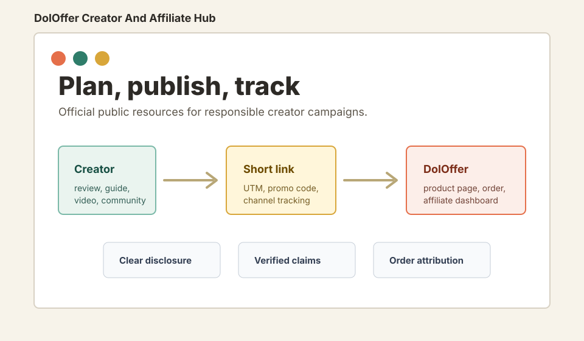

Official public partner resources
DolOffer Creator And Affiliate Hub
A practical workspace for creators, reviewers, affiliate partners, and operators promoting DolOffer with clear claims, tracked links, and responsible disclosure.

Resource Library
Start With The Right File
Creator Workflow
Publish With Fewer Loose Ends
-
01
Pick a product angle
Use the product overview and live DolOffer page before making availability or price claims.
-
02
Draft from approved templates
Adapt the template to the creator voice, then keep the disclosure close to the first link.
-
03
Create tracked links
Give each creator, channel, and major content asset a separate short link and UTM set.
-
04
Review performance
Read short-link clicks, website events, and affiliate orders as separate signals.
Attribution
Short Links Are A Signal, Not The Sale
go.doloffer.com/chatgpt-creator-a
Route branded short links to DolOffer pages with UTM values, then reconcile clicks with registrations, product views, orders, refunds, and the affiliate dashboard.
Read the tracking guide